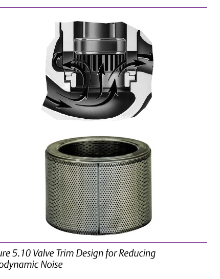
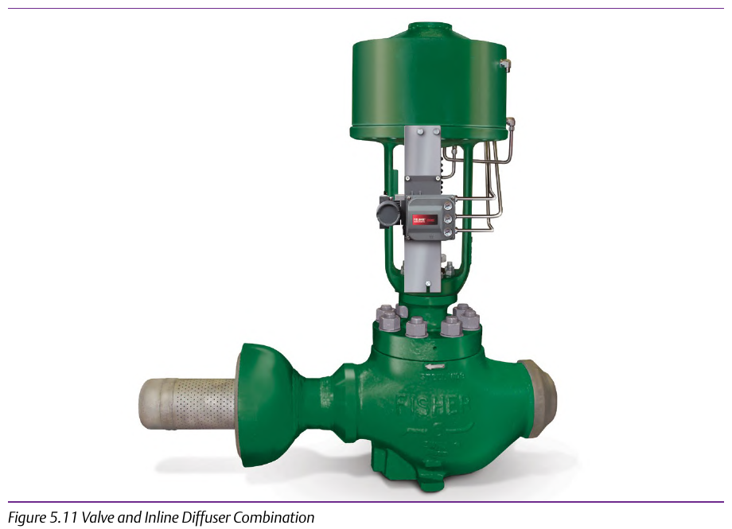
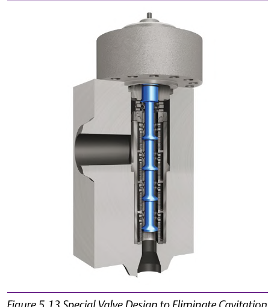
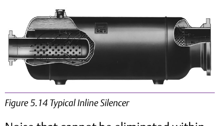

Activity: Match the Mitigation to the Mechanism




Given a real service case and its actual failure mode (aerodynamic noise vs. cavitation, source-side vs. downstream), select and defend one mitigation against the other three — the wrong choice for the mechanism, e.g. an inline diffuser for a cavitation problem, does not fix the actual damage. Component Index: cvh-cmp-noise-reduction-trim-photo, cvh-cmp-valve-inline-diffuser-photo, cvh-cmp-cavitation-elimination-valve-design, cvh-cmp-inline-silencer-photo.